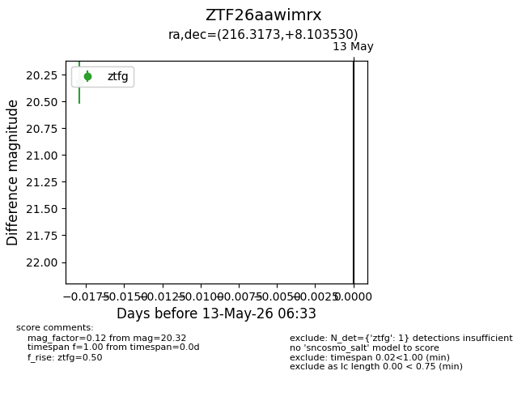
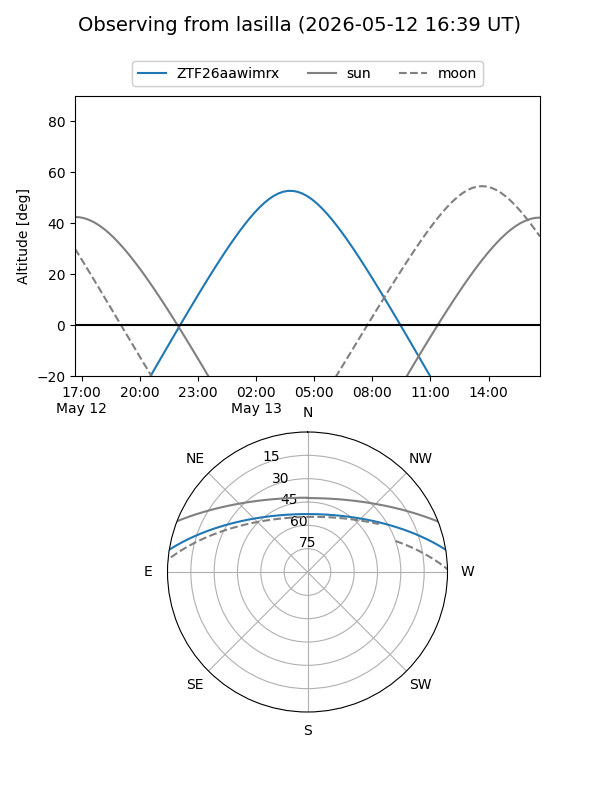
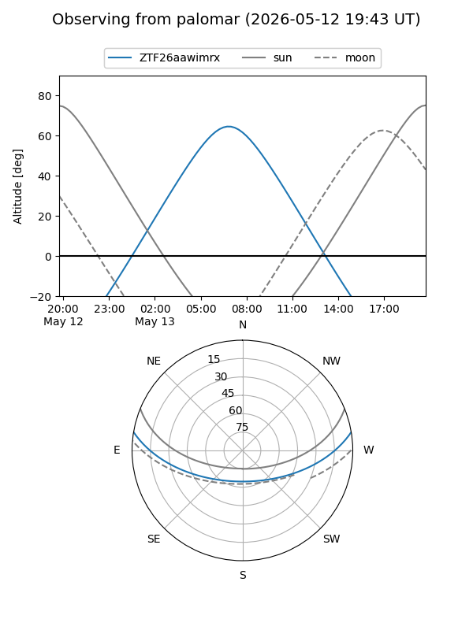

ZTF26aawimrx
Target ZTF26aawimrx at 2026-05-13 06:35
Aliases and brokers:
FINK: link
Lasair: link
ALeRCE: link
alt names
ZTF26aawimrx (ztf,fink_ztf)
Coordinates:
equatorial (ra, dec) = 216.3173,+8.10353
equatorial (HMS+DMS) = 14:25:16.16,+08:06:12.71
galactic (l, b) = (356.7102,+60.75724)
Flags:
Photometry:
last ztfg=20.32
1 ztfg detections
Lightcurve

Visibility


Additional plots